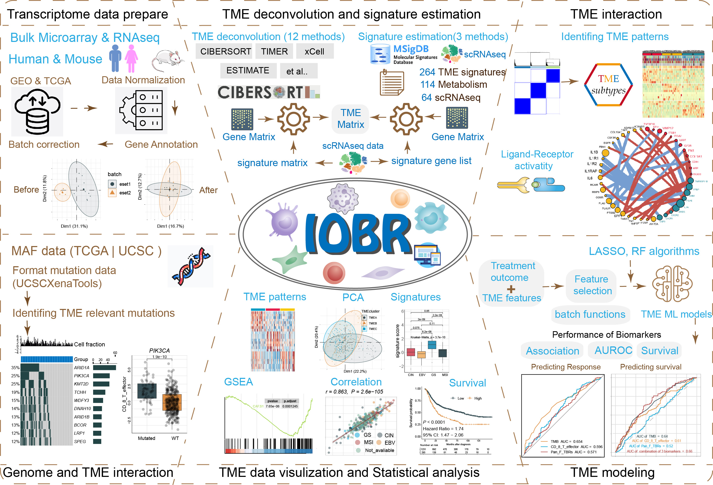

Multidimensional Decoding Tumor Microenvironment for Immuno-Oncology Research
Dongqiang Zeng, Yiran Fang
Department of Oncology, Nanfang Hospital, Southern Medical University, Guangzhou, Guangdong, P. R. Chinainterlaken@smu.edu.com, fyr_nate@163.com
2026-05-20
Source:vignettes/IOBR-user-manual.Rmd
IOBR-user-manual.RmdOverview
IOBR is the acronym for Immuno-Oncology Biological Research to perform multi-omics immuno-oncology biological research to decipher tumour microenvironment and signatures for clinical translation.
Module Introduction

IOBR encompasses six functional modules:
- Transcriptome data prepare module : pre-procession of transcriptome data, as well as pertinent batch statistical analyses;
- TME deconvolution and signature estimation module : estimation of signature scores and identification of phenotype relevant signatures, along with decoding immune contexture;
- TME interaction module : clustering TME characteristics and analyzing receptor-ligand interactions;
- Genome and TME interaction module : analysis of signature associated mutations;
- TME data visualization and Statistical analysis module : visual representation and statistical examination of TME data;
- TME modeling module : fast model construction and the assessment of model performance.
Methodology
IOBR integrates eight open-source deconvolution methodologies: CIBERSORT , ESTIMATE , quanTIseq , TIMER , IPS , MCPCounter , xCell and EPIC . In addition, 323 published signature gene sets have been collected by IOBR covering tumour microenvironment , tumour metabolism , m6A , exosomes , microsatellite instability and tertiary lymphoid structure. IOBR has used three computational methods to calculate the signature score, including PCA , z-score and ssGSEA.
Visualization
IOBR integrates visualization function, including boxplots , heatmaps , percentage bar charts , scatter plots , KM plot , PCA plot etc.
Tutorial
Please go to https://iobr.github.io/book/ for the full tutorial.
Citation
If you use IOBR in published research, please cite:
Zeng D, Fang Y, …, Liao W (2024) IOBR2: Multidimensional Decoding of Tumor Microenvironment for Immuno-Oncology Research. Cell Reports Methods_. 4(9):100910. doi:[10.1016/j.crmeth.2024.100910](https://doi.org/10.1016/j.crmeth.2024.100910)
Zeng D, Ye Z, Shen R, Yu G, Wu J, Xiong Y,…, Liao W (2021) IOBR: Multi-Omics Immuno-Oncology Biological Research to Decode Tumor Microenvironment and Signatures. Frontiers in Immunology. 12:687975. doi:[10.3389/fimmu.2021.687975](https://www.frontiersin.org/journals/immunology/articles/10.3389/fimmu.2021.687975/full)
Feedback and helps
Should any queries or concerns arise, consider checking the IOBR primary webpage initially. The majority of your issues are likely already addressed there. Supposing you’ve detected a fault, adhere to the instructions, and offer a replicable instance to be showcased on the github issue tracker.